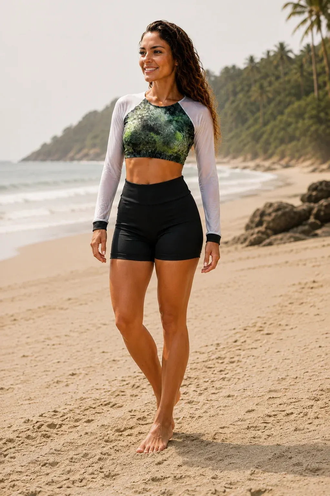

Cropped Verdin
O Cropped Esportivo de Manga Longa foi desenvolvido para acompanhar você em diferentes momentos — da prática esportiva aos momentos de lazer — com um design mod
R$ 250,00
4x sem juros
Ficha técnica
- Tecido
- Poliamida (84% a 85%) e elastano (15% a 16%)
- Fabricação
- Brasil
- Tamanhos
- P
Sobre a peça
Movimento, conforto e estilo em uma única peça.
O Cropped Esportivo de Manga Longa foi desenvolvido para acompanhar você em diferentes momentos — da prática esportiva aos momentos de lazer — com um design moderno e funcional.
O corpo do cropped é confeccionado em tecido de alta elasticidade, proporcionando ajuste ao corpo, liberdade de movimento e conforto durante a atividade. As mangas em tecido semitransparente e respirável favorecem a circulação de ar, ajudando na ventilação durante os movimentos.
O contraste entre o tecido estampado e as mangas leves cria uma estética esportiva sofisticada, enquanto o acabamento ajustado valoriza a silhueta sem limitar os movimentos.
Destaques da peça:
Tecido com alta elasticidade em todo o cropped
Mangas semitransparentes e respiráveis
Modelagem que acompanha os movimentos do corpo
Design esportivo contemporâneo
Conforto para atividades e momentos de lazer
Acabamento ajustado e sofisticado
Uma peça para quem quer se movimentar com liberdade sem abrir mão do estilo.
Entrega, troca e cuidados
- Envio
- Pelos Correios, para todo o Brasil, a partir de Araruama (RJ). O pedido é despachado em 1 a 3 dias úteis após a confirmação do pagamento. Frete grátis acima de R$ 100 para Sul e Sudeste.
- Troca
- Troca ou devolução em até 7 dias corridos após o recebimento, conforme o art. 49 do CDC.
- Conserto
- Se a costura soltar um ponto com o uso normal, a Turkista conserta.
Política de envio · Troca e reembolso · Como cuidar da peça · Perguntas frequentes